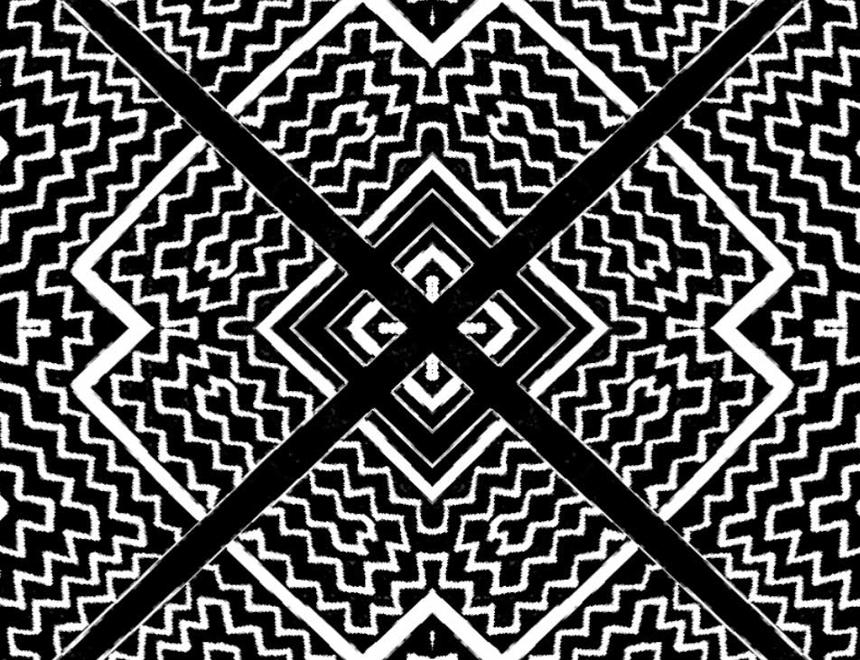
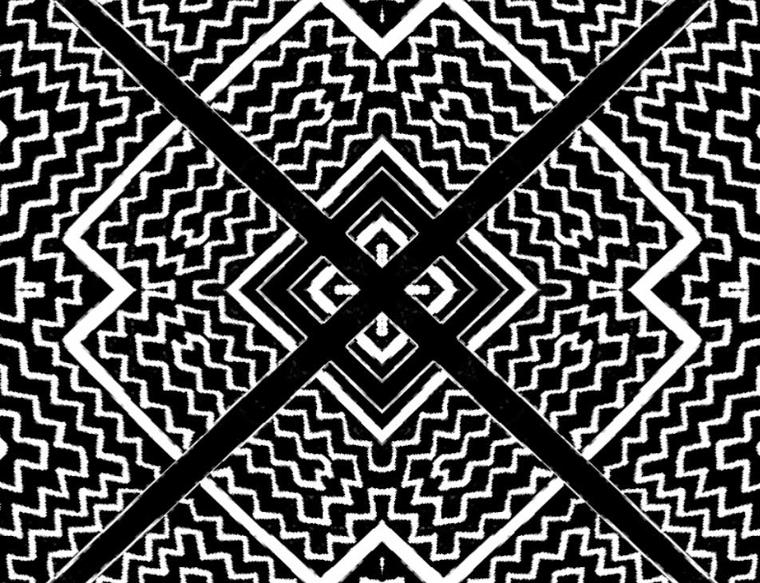
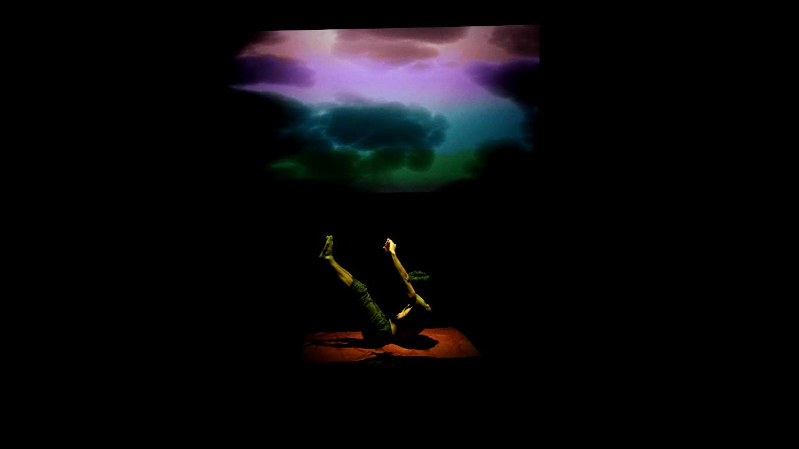
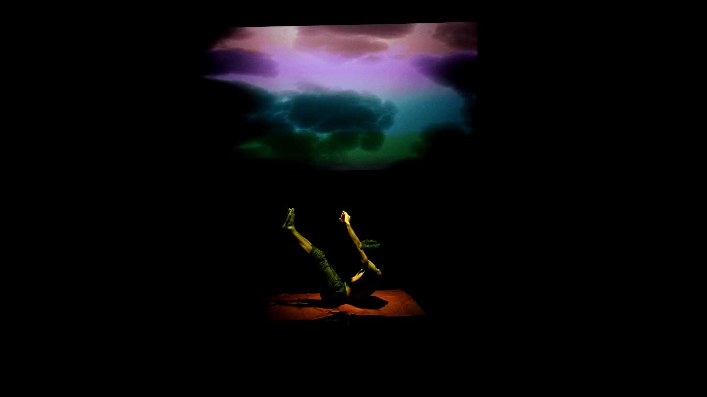
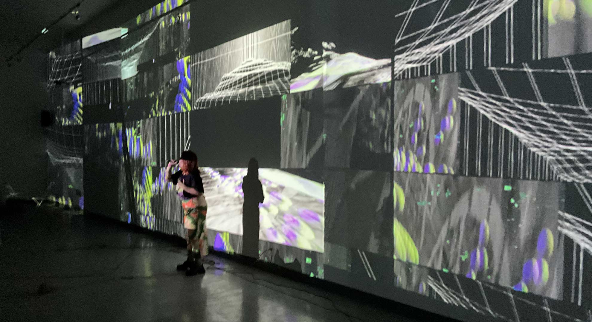
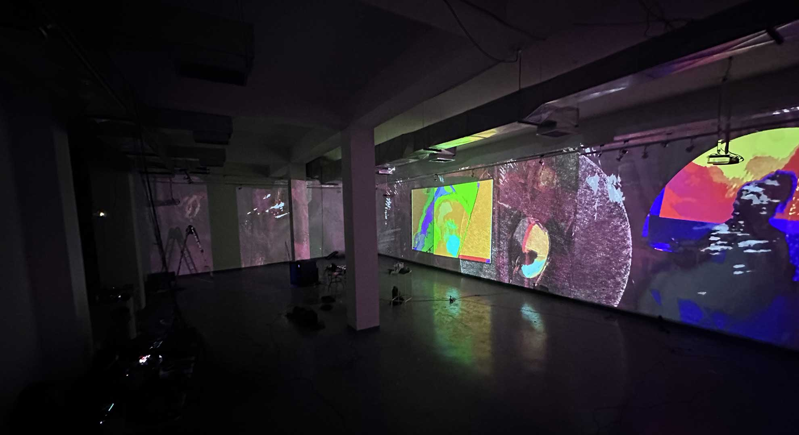
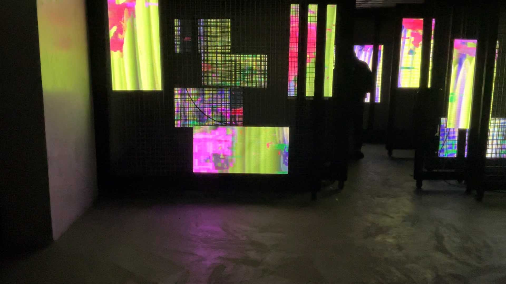
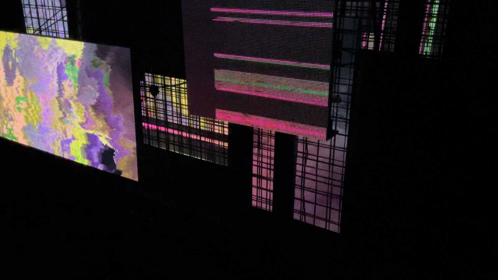

PROYECTOS
Soundcamp


El soundcamp fue un campamento de 4 dias talleres, reflexiones, exploraciones, e improvisación sobre el fenómeno sonoro y sobre la práctica de la escucha profunda. Realizado por la Academia Independiente de Creación Sonora (AICSO) a cargo de Marcelo Mellado y Diego Faucheux.
28 al 31 de octubre del 2021
Crafting the field: Iskonawa
 

Crafting the field de Xapiri Ground es una serie de composiciones que reflexionan sobre el contexto natural y social que rodea a culturas indígenas amazónicas y a sus contemporáneos. Para la quinta entrega de la serie: Iskonawa, se integra un discurso visual que acompaña a la composición. Este trabaja alrededor de los diseños iconográficos y símbolos de identidad de la comunidad Iskonawa.
Sonido: Christian Mun
Visuales: Marcelo Mellado
12 de agosto del 2022
Hora
 

Teatro inmersivo que explora las sensaciones de inquietud, desconcierto, miedo y desesperación.
Sonido: Christian Mun
Visuales: Marcelo Mellado
31 de octubre del 2022 en Qine
N!
 

La primera entrega de N! se presenta como una instalación multimedia inmersiva y participativa. Explora las posibilidades de diálogo entre artistas visuales, sonoros y el público.
28, 29 y 30 de junio del 2023 en Proyecto Amil
N! en Ñam
 Esta instalación multimedia consistió en la exploración espacial de las fuentes de video y sonoras, a través de la localización de módulos led en diferentes distancias, generando así un espacio complejo
26 de julio del 2023
Canto Rodado
Canto rodado es una puesta escénica multimedia trabajada en conjunto con el Poeta Fernando Mena basada en su poemario homónimo. Marcelo se encarga de ejecutar la composición sonora y el material visual en una proyección
Ruido y Magia. 2da edición
Ruido y Magia es un festival concierto de bandas peruanas contemporáneas exponentes del shoegaze.
La segunda edición se realizó en la huaca Mateo Salado en Pueblo Libre.
8 de junio del 2024